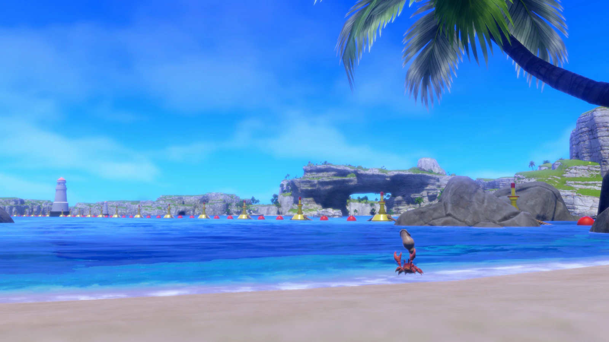
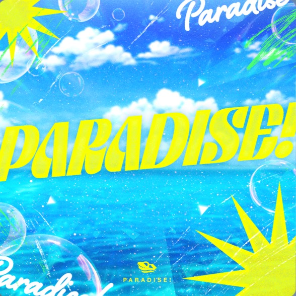

ソーダポップラグーン
DREAM PARK AREA 03
ソーダポップ
ラグーン
Splash of Blue Oasis
ボートで島々を巡り、釣りや海上競技を楽しめる、海がテーマの第3エリア。

01
AREA GUIDE
基本情報
11:00
クリア
複数の島
進め方
メインクエスト第2章12話「さわがしい時間は終わらない」をクリアすると解放されます。第3章のストーリーを進めると移動できる海域が増え、釣りスポットや新ミニゲーム、施設へ行けるようになります。
02
FISHING
さかな釣り

エサ、釣りスポット、ゲーム内の時間帯によって釣れる魚が変わります。
釣った魚は図鑑へ登録され、種類や釣果に応じて報酬を受け取れます。
ゲーム内には段階の異なる釣り竿モデルと強化用UIが用意されています。
釣りで入手するソーダポップコインは、エリア内の交換所で素材などと交換できます。
03
MINIGAME
スプラッシュボール

形式3人×3チーム
目的相手ゴールへ
ボールを入れる
ボールを入れる
操作ボートで海上を移動
報酬個人スコア・
チーム順位
チーム順位
3チームが同時に競う海上ミニゲームです。ボートでボールを運び、相手チームのゴールへ入れて得点を獲得します。第3章を進めると通常プレイが解放され、マルチプレイのプライベートルームでは第1章4話「幻想的な繋がり」クリアが参加条件です。
04
AREA THEME
PARADISE！

ソーダポップラグーン エリアテーマ曲
PARADISE！
歌唱：hololive IDOL PROJECT
作詞・作曲・編曲：中村歩、吉村隆行
- BPM
- 124
- 難易度
- 4 / 10 / 19 / 26
- コンボ
- 227 / 352 / 572 / 959
05
GAME DATA
攻略データ
ストーリー第3章はEP15「波間に響く海上ライブ！」まで
クエストメイン・エリアクエスト合計34個
トレジャー全28個／レッドダイヤ合計1,000個
魚図鑑初期実装分は80種類
全体報酬目安関連コンテンツ合計でレッドダイヤ12,680個
完成報酬アチーブメントでブルームストーン1個
※上記はゲーム内実測を含む攻略情報です。アップデートで内容や条件が変更される場合があります。
06
TREASURE
トレジャーボックスの位置
トレジャーボックスはストーリーの進行に合わせて増え、EP14まで進めると全28個が出現します。マップ右上の宝箱アイコンで、現在出現している数と開封済みの数を確認できます。
全28個の主な報酬
レッドダイヤ1,000個、ホロドリガチャチケット3枚、ミュージックディスク2枚、ホロリウム1個、ソーダポップコイン2,700枚、レッスンPt560,000。
| No. | 出現時期 | マップ内の位置・目印 |
|---|---|---|
| 1 | EP2・エリア解放後 | エントランス東側、岩壁に囲まれた暗がり |
| 2 | EP2・エリア解放後 | 南西の岸、倒木と岩壁の間にある草地 |
| 3 | EP2・エリア解放後 | エントランス付近の桟橋の先 |
| 4 | EP2・ボート解放後 | アスレチック東側の海上に浮かぶタル |
| 5 | EP2・ボート解放後 | フィッシュブルーがある小島の上 |
| 6 | EP3 | フィッシュブルー付近、青いバラの茂みの間 |
| 7 | EP4 | 一条VIPラウンジの建物外側の通路 |
| 8 | EP4 | こよラボ・海洋支部の白いデッキ |
| 9 | EP5・ボートLv2 | 西側の崖の間、海上に浮かぶタル |
| 10 | EP5・ボートLv2 | アスレチックの島の脇、海上に浮かぶタル |
| 11 | EP5・ボートLv2 | アスレチックがある島の上 |
| 12 | EP6 | ソーダポップラグーンステージ裏手、扉の先 |
| 13 | EP7 | ラミィズスノードームの雪の上 |
| 14 | EP8 | スプラッシュスタジアム横、海上に浮かぶタル |
| 15 | EP9 | アスレチックがある島の砂浜 |
| 16 | EP10・ボートLv3 | 西の岸の岩場、段になった潮だまり |
| 17 | EP10・ボートLv3 | 北の入り江の東、浅瀬の砂地 |
| 18 | EP10・ボートLv3 | 東の岸にある洞窟の中 |
| 19 | EP10・ボートLv3 | うぱおヘヴン西側、海に浮かぶ草の小島 |
| 20 | EP10・ボートLv3 | スプラッシュスタジアム東側、海に浮かぶ草の小島 |
| 21 | EP11クリア後 | 入り江（クジラの住処）の海上に浮かぶタル |
| 22 | EP12 | ぼこぼこビーコンの雲の島の上 |
| 23 | EP13 | うぱおヘヴンの店内 |
| 24 | EP14 | ぽぽぽハッピーキャンプのソファ横 |
| 25 | EP14 | 東の砂浜にある木製デッキ |
| 26 | EP14 | 西の岸にある崖の上 |
| 27 | EP14 | 東の崖の上にある草地 |
| 28 | EP14 | 西の岸、岩壁のそばにある草地 |
見落としやすい場所は、海上のタル、うぱおヘヴン西側の小さな草の島、ステージ裏の扉の先です。
07
SOURCES